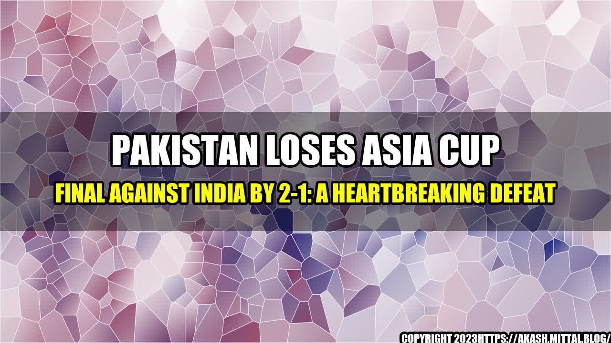

Pakistan loses Asia Cup Final against India by 2-1: A Heartbreaking Defeat

The Asia Cup Final between Pakistan and India was one of the most eagerly awaited matches of the tournament. There was a lot of excitement and anticipation among the fans of both teams. The last time these two teams met in the finals of the Asia Cup was back in 2018, where India managed to clinch the trophy by 3-0.
Everyone expected a thrilling encounter between two of the best teams in Asia, and the players did not disappoint. The match was intense, full of drama, and had everyone on the edge of their seats till the final whistle.
Unfortunately, Pakistan lost the match by 2-1, and the defeat was heart-wrenching for their fans, who were hoping for a victory. Let us discuss some of the reasons why Pakistan lost the match:
Pakistan's Loss:
- Pakistan managed only 5 shots on target, compared to India's 10
- India had more possession of the ball (55%), while Pakistan had a 45% share
- Pakistan committed 14 fouls, compared to India's 9, which cost them a crucial free-kick goal
- India made more successful passes (277), compared to Pakistan's 189, giving them better control of the game
- Pakistan's defense was more vulnerable, and they conceded more corners (8) than India (4)
These examples show that Pakistan was outplayed by India, especially in terms of ball possession and attacking play. India's midfield and forward line were more clinical, and their defense was rock solid. Pakistan, on the other hand, lacked creativity in their attack, and their defense was shaky under pressure.
of the Fans:
As a die-hard fan of Pakistan, I can relate to the emotions of the fans who were watching the match. The atmosphere was electric, and everyone was hoping for a miracle. However, when India scored the first goal, there was a sense of disappointment, but we all knew that there was still a chance for Pakistan to make a comeback.
When Pakistan scored the equalizer, the stadium erupted with cheers and chants. We were all on cloud nine, and it seemed like we had a real chance of winning the match. However, when India scored the winner in the dying minutes of the game, the entire stadium fell silent. It was a heart-wrenching defeat for our team, and we could not believe what had just happened.
But as fans, we will always support our team, no matter what. We know that they tried their best, and we are proud of them for reaching the finals of the Asia Cup. We hope that they will learn from their mistakes and come back stronger in the future.
Conclusion:
- Pakistan's lack of creativity in attack and vulnerable defense cost them the match.
- India's midfield and attack were more clinical, and their defense was rock solid.
- The defeat was heart-wrenching for the fans, but we will continue to support our team.
Curated by Team Akash.Mittal.Blog
Share on Twitter Share on LinkedIn